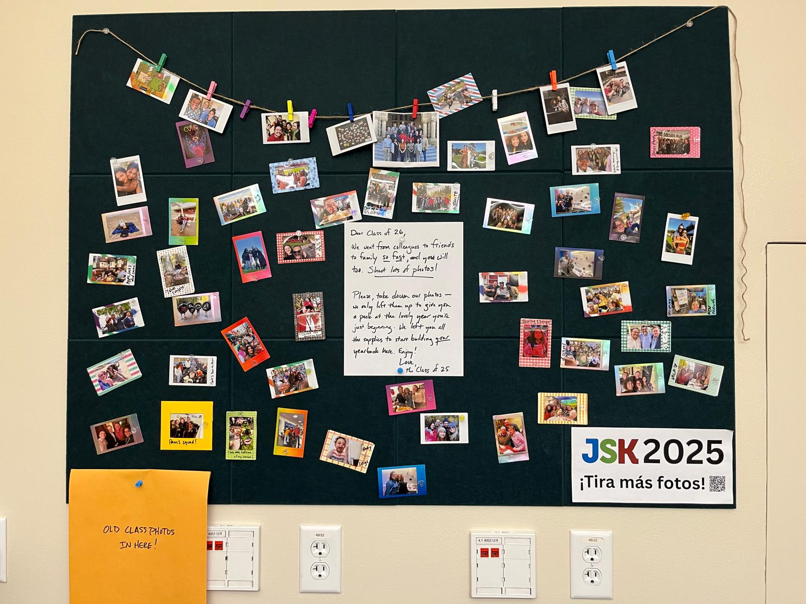

JSK Yearbook Notes
(What to know about that big picture board in the Hub)
Hello, future JSK fellows! From the class of 2025, we are so excited for you to embark on the best year of your lives.
Our class gift to you is this photo board, a place to store memories, celebrate wins and catalog the beauty of this year. We invite you to use it however you’d like! But we took our original inspiration from the great artist and scribe, Benito Antonio Martínez Ocasio, aka Bad Bunny, who famously said, “DeBÍ TiRAR MáS FOToS.” Just make sure to leave some supplies behind for the next class, so they can get off to a running start!
Key info:
- We originally stocked the supply box with a Fujifilm Instax mini photo printer (you can upload any digital image directly from the phone app) and Instax film.
- We’re gonna replace that JSK 2025 sign with something more permanent/pretty, just wait a few weeks please. 😀
- Whenever the technology needs to be replaced or the information on this site needs to be updated, please reach out to Ryan Pitts.
We’re raising a glass to you, to serendipity, and to the magic of JSK!
Class of 2025
Tamoa Calzadilla, David Carson, Bettina Chang, Mark Fiore, Candice Fortman, Gregory Gondwe, Darshini Kandasamy, Arfa Khanum, Juan Camilo Maldonado Tovar, Ryan Pitts, Mikhail Rubin, Joe Ruiz, Nalan Sipar